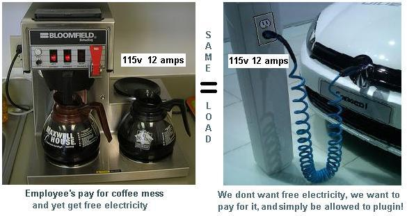
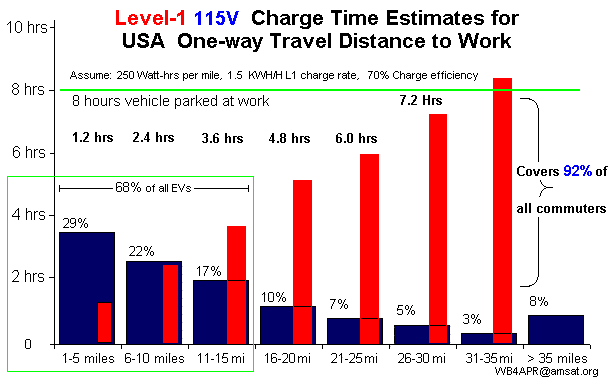

APRS - A Practical Recharging System!
APRS - A Practical Recharging System!
A DIY Project for the EV Experimenter
APRS - A Practical Recharging System!
Background see: EV-charging-everywhere.html web page.
and EV-misconceptions.html web page.
Download the IEEE Paper on L1 Charging justification for this concept.
97% of all Charging at-work can be done using 120v outlets! The state of Maryland EV council has intensly studied the need for charging stations and concludes that the best place outside the home for charging is at-work. (See the EV-charging-everywhere page). And nothing more than 120v outlets are needed since cars spend more than 21 hours a day parked and that is usually at home and at work. We need to be concentrating on making 120v outlets more practical instead of thinking of them as an afterthought! Here are two projects to make it easier to charge from 120v at home and at work.
LEAF RETRACTIBLE L1 CHARGE CORD: This first project greatly facilitates the use of 120v charging anywhere by putting the EVSE on board the car along with a retractible extension cord to make plugging-in a snap. You add a Home Depot $39 retractible extension cord under the hood of a Leaf as shown here (yellow) so that L1 charging from any outlet is as easy as poping the charge door and pulling out the cord and plugging it in. The last 30 years of DIY EV conversions and all of the early Prius conversions simply used 120v cords. This was always the ultimate value promise for commuter EVs, to simply be able to plugin anywhere, anytime to any 120v outlet. Just put the EVSE on board! so you only have to pull on one end of the cord to plug in. This photo is before we drilled the hole in the back of the Charge port pocket so that the extension cord plug was easily available in the charge port.
To make installation simple and avoid any issues with accessing the car's internal high voltage wiring, we simply made our own B1772 plug (B for Box) in a minibox that can remain plugged in to the normal J1772 even while the door is closed as shown here to the right. The pins that mate to the car come out the back of the box. If you want to use any other normal L2 charging cord, simply unplug this mini-box and set it out of the way. The image shown to the right below, shows the small minibox plugged into the J1772 socket so that the retractible extension cord remains attached to the car and ready to go. In the lower right of the charging port area, you also see the business end of the 120v L1 extension cord plug. It goes through a small hole to the yellow retractible cord reel that fits between the engine and the battery shown in the right hand photo. You have to loosen the battery strap and move the battery to the right an inch or so and also jostle some wiring harness clips to get the yellow reel to fit.
Retractable Cord Limitations: As the 30 foot retractable cord comes from Home Depot, it has #16 wire and is only rated at 10 amps. This will slow charging by 16% from the normal 12 amp charging of L1. You could replace all the cord on the spool with about 20' of #14 cord also available from Home Depot for about $20, but then who knows about the rating of the sliding contacts? So we set our EVSE circuit to signal a 10 amp limit. Someone should test the cord at 12 amps and see if it smokes, but taking it apart, the sliding contacts are typical rivit-on-plastic and will surely melt and fail if they get too hot. I think it is best to just use it at 10 amps unless you want to test it for a while at 12 amps to be sure the contacts dont overheat. Also, the cord should always be pulled out the full extent on every charge so there is no heat buildup in the coil. This is easy to do by marking some white paint on the cord where there is only one layer left on the retractor. You never want to pull it out 100%, or you will have trouble engaging the retractor mechanism.
WARNINGS and LIMITATIONS: This DIY project meets all of the intended safety requirments of the J1772 spec but with a few exceptions. Use these ideas at your own risk!. Here are the exceptions that are met with alternate means (human in the loop):
Special LEAF Cautions: There are rumors in the early Leaf models that the internal charger can be damaged if power is lost while charging. This has happened during storms, or other grid outages at no fault to the owner, or the EVSE. So in this DIY project, if one unplugs either end of the cord while charging without manually putting the switch in the OFF position, then this rumored damage could possibly occur. This is clearly the fault of the Leaf charger and should be fixed in future cars. No one has heard of this occuring since the few earliest models.
Cheap Charging for the Experimenter: This page attempts to collect ideas on improving the availability of simple 120V Level-1 charging everywhere as elaborated on the above background web page. Since cars spend more than 21 hours a day parked, there is more than enough time to maintain even a 100 mile EV at a fully charged condition as long as it is plugged in when parked.
The vast 99.9% of the public simply do not understand the charge-anywhere concept because of their century old legacy of thinking that refueling must always be done at some special refueling station, either a public gas stations or public EV charging station. (See the EV-misinformation.html web page). Whereas, anyone with an EV and a place to park and plug-in soon learns it, and his #1 goal is to be able to plug into a simple 120v outlet anytime, anywhere. The projects on this page help the experimenter make it easier to plug-in to available outlets everywhere.
For the daily commuter with an EV commuting vehicle, there is no need to have either $5000 fast L2 charge stations nor $1000 L1 charge cords. Our goal here is to facilitate EV charging for under $100.
Cheap P1772: This first image is an attempt to avoid the nearly $900 cost of a spare J1772 cord for charging at a second place besides home. I call this DIY version, the P1772, for Plumbing 1772. This design uses all PVC parts from the Plumbing department of Home Depot. Notice how it minimizes cord strain on the connector by nearly a factor of 10 to 1. This allows it to not need the complexity of the locking mechanism. Also, the 2" pipe fitting has plenty of room then for the EVSE Proximity and Pilot signalling circuits. The only thing on the other end of the cord is a plug. (There is no bulky appendage in the line). Just plug it into any outdoor 120v GFCI protected outlet.
Charge Post: Another simple plumbing fixture (3 inch 45 degree elbow) can make a nice weather proof P1772 holding device shown here. A slot cut in the bottom of this fitting allows the P1772 to fit up nicely inside. The final version will add a few more inches of 3" pipe so even wind-blown rain will not contact the P1772. This and a nice wooden post and a sign containing a standard 120v GFCI outlet is all that is needed to install L1 EV charging anywhere.
EVSE Circuit Board: The J1772 signalling circuit and safety protection features are all mounted on a small circuit board inside the PVC pipe. The circuit shown here does not include the relay which is separately located in the short vertical handle of the PVC pipe. The transformer powers the circuit from either 120 or 240 VAC.
The only other part not shown here is the ON/OFF switch which is separtely mounted on the control panel with the LED's. A future board should include the switch onboard.
OPERATION: These two separate project cords (to the right) operate like any other EVSE according to the J1772 signalling spec shown in the diagram above. Four LED's have been added to show the conditions of the communications between the EVSE and the car. The switch MUST be off during plugging and un-plugging. The first Green LED shows if there is charge power available. The second (Red) LED indicates when the EVSE detects it is plugged into the car. If the car requests a charge, then the AC relay is energized and the Charging LED (Red) will illuminate (never unplug in this condition). The forth Green LED indicates that no fault has been detected on the Pilot circuit.
DISCONNECTING: To disconnect, simply turn the switch OFF which will use the proximity circuit to tell the car to stop charging. The car will remove the Pilot load to indicate that no charging is wanted, and the AC relay in the EVSE will drop out. When the RED CHARGING LED goes out, it is safe to unplug the P1772 device.
PARTS AVAILABILITY: We hope to put together a kit of parts for under $100 to allow any good experimenter with commensuarate skills and full knowledge of the risks involved to be able to build his own EVSE for use on his own car. The EVSE circuit board is self powered from either 120v or 240v and the relay is rated at 12 amps. All parts are individually UL approved, though the system combination has not gone through any UL or any other safety approval. Experimentors use at their own risk!
Kits wont be ready until later in the fall. But you can let us know if you are interested via email to wb4apr at amsat dot org.
The rest of this page is a regurgitation of most of the material in the original reference pages and are being revised as we speak...
See the NPR interview by Jessica Gould or hear it (2 mins).
Other Related Pages:

 The 120V outlets exist already in most garages and parking lots! All they need are signs to tell us how to pay for the electricity.
This is either $2 a day, or $20 to $40 a month depending on range.
The 120V outlets exist already in most garages and parking lots! All they need are signs to tell us how to pay for the electricity.
This is either $2 a day, or $20 to $40 a month depending on range.
 Monthly Pass: For employee parking, the authorized EV owner employee plugs into any convenient
120 VAC outlet in the garage. No special chargers or installation is required.
A few such existing exterior 120 volt standard outlets can usually be found on
most facilities everywhere (at least equal to the number of EV's that work
there for the next few years!). If not, they should cost little to install.
See photo at upper right.
Monthly Pass: For employee parking, the authorized EV owner employee plugs into any convenient
120 VAC outlet in the garage. No special chargers or installation is required.
A few such existing exterior 120 volt standard outlets can usually be found on
most facilities everywhere (at least equal to the number of EV's that work
there for the next few years!). If not, they should cost little to install.
See photo at upper right.
Buy A SIGN! A friend (with an unrelated company) is helping make the green sign shown here at right available to others for $26. So go to this site, select the quantity and select the $3 First class mail option (also select USA only). Do not combine with any other purchase from the company. To purchase one of these signs for your local Employer or Parking Garage, click here
This Simple Signage on Existing 120v Outlets will accomplish FAR MORE than the $50 Million government rebates being offered for the installation of expensive level-2 quick chargers which are not needed at home (8 hours sleeping) or work (8 hours working) for employees. This 120 volt charging at work can almost double the effective commute range of EV employees. Expensive L2 Quick chargers at work are generally idle 83% of the time! (see analysis below) because cars charge in an hour or so and then sit idle. Managers do not want employees going to the parking lot every hour to play musical chairs with their cars to share a few expensive L2 chargers that can fully replenish an average commuter EV in under an hour! . . . Let them plugin to any 120v outlet the full 8 hours and get the same charge instead.
 The Employer/Employee relationship already exists for pay-as-you-go coffee messes, and here the employee's Electric car plugged into a 120v outlet is drawing no more power than a coffee pot. In addition, he/she is even willing to fully pay for the electricity up-front.
The cost for 21 workdays a month of 8 hours of electricity from any standard 120 volt 15 amp circuit to make up for an incoming commute is shown in the figure below right. Nearly 70% of all commuters would use less than 81 cents a day while charging at work. Employees are able to purchase monthly charging passes based on their home-of-record distance to work. Using an electirc rate of 15 cents per KWH then $20/month would cover 70% of all commuters driving under 16 miles to work, and $40/month would cover the serious 32 mile trip to work by a Leaf or other road-warrior commuter as shown in this plot of commute distances and percent drivers. Maybe $5/mo would cover for an electric Motorcycle and $2/Mo for an electric bike. And this simple system cannot be abused!
 Power drawn is Self-Limiting. This arrangement cannot be abused since an EV
simply cannot draw more than about $1.80 a day from a 120 volt 15 amp outlet
during an 8 hour day. Any more current and the 15 amp breaker will trip.
If one tries to stay plugged in for say 16 or 24 hours to
draw more government/company electricity than he has pre-paid, he runs up against
the problem of a full battery! Once his car's battery is fully charged
(which for 2/3rds of all EV's is under 4 hours) then no more power can be
drawn from the outlet! Assuming the EV owner always charges up at home the night before,
then the charge time at work on a 120v outlet is directly proportional to his one-way
distance to work as shown in the next graphic to the right.
Power drawn is Self-Limiting. This arrangement cannot be abused since an EV
simply cannot draw more than about $1.80 a day from a 120 volt 15 amp outlet
during an 8 hour day. Any more current and the 15 amp breaker will trip.
If one tries to stay plugged in for say 16 or 24 hours to
draw more government/company electricity than he has pre-paid, he runs up against
the problem of a full battery! Once his car's battery is fully charged
(which for 2/3rds of all EV's is under 4 hours) then no more power can be
drawn from the outlet! Assuming the EV owner always charges up at home the night before,
then the charge time at work on a 120v outlet is directly proportional to his one-way
distance to work as shown in the next graphic to the right.
This is SIMPLE and NO COST. Enough outlets EXIST NOW for the next year or so. Just say YES and let us Payin-to-Plugin. We must get off foreign oil ASAP and show how easy it is to commute in an EV.
 For Example, I've been trying for over a decade to get permission to pay-for and plug into the outlet sitting right there within 6 feet of my car parking space at work (see photo at top). But no one in the government can figure out how to take my 50 cents a day and grant that authority. Maybe a simple sign will do it...
Range Anxiety and Public Charging Infrastructure: There is too much hype and media hand wringing over EV range. Over 67% of ALL Americans live in single family detached homes. This means that over 205 MILLION car owners already have an EV charging point at home (any 120v outlet) and all they need is an outlet at work to charge during the 8 hours the car is parked there. And we don't need a $6000 quick charger installation to do it!
L1 Time to Charge:
An 8 hour overnight or charge-at-work can replenish a 32 mile trip to or from work
in under 8 hours. The expensive L2 Quick charger can do it in 2 hours but is not needed
by most commuters during the 8 hours of sleep and the 8 hours of work!
Talking Point: Level 1 standard 120v outlets at-work can fully charge over 90% of all commuters! (see L1 chart at right).
.

Focus on the Benefits: Instead of focusing on how long it takes to fully fill an EV battery from L1 home charging, we should instead focus on how many miles-per-charge we get during an 8 hour charge at Home and at work. Since any EV will gain about 32 miles of charge during 8 hours on a standard outlet, that can give EV's that charge at work a total daily range of 64 miles - more than a single charge can do in a Volt for example.
LEVEL-1 CHARGERS AT WORK: Enabling the use of 120v standard outlet Level-1 chargers at work should be the #1 goal of EV Infrastructure roll-out in the USA. As shown at right, installing level-2's is an 83% waste of resources. However, enabling the use of 120v outlet charging (Level-1) can meet the charging needs of 92% of all USA commuters with EV's and still use less than half the Level-1 charging capacity! As shown here, these 90% of all EV commuters simply plugged into a 120v outlet at work, would leave work fully charged in under 8 hours.
One Million EV's by 2015: If you think 1 Million EV's is a small number, remember, there are over 400 different models of gas cars being sold by 45 manufacturers to meet the broad distribution of public demand for vehicles that match their personal need. Even the #1 selling gasoline vehicle in America (Ford F150 pickup truck) only sells to 4% of Americans! And, by the way, it costs more than the Volt or the Leaf! If only 1% of drivers bought an EV, that would be 3.5 million EV's! Since 67% of ALL drivers already have an L1 charger port at home (120 VAC outlet), this simple proposal to provide L1 outlets at work would INSTANTLY DOUBLE THE RANGE of every EV in the hands of commuters and at NO COST to taxpayers. Even Convenience stores are installing 120v charging outlets.
Double the Range: This is truly a no-cost program that will revolutionize the progress towards electrification of transportation and its concomittant environmental and economic benefits by doubling the range of EV's for commuters and employees. It can also demonstrate to other large Company facilities the benefits of such an approach on their campuses. Charging at home and at work constitutes 70% of the charging pyramid as shown below.

FOCUS ON THE 120v OUTLETS FIRST! Too many bureaucrats and initiatives are too focused on the expensive Level-2 and L3 EV quick charging stations and promoting public EV charging infrastructure as a way to combat Range Anxiety. This focus on public charging which is only the tip of the Charging Pyramid as shown above is doing more to underimine the adoption of EV's than to help them. Range anxiety is a self-fulfilling prophecy if we keep focusing on the need for fast routine public charging. Also the emphasis on charging speed is completely misplaced. At every level of the charging pyramid, except the top, charging is not a separate go-to process but is just an added 5 seconds on the parking process. The only place where EV charging speed is paramount is along the interstates, where the only reason for being there is to charge and charge fast to get from point-A to point B. Every other level of the charging pyramid is simply charging conveniently while we are parked. And when you are parked for 4 hours or more, 120v standard outlet charging is just fine. Park at-work, Plug-in at work and double your range!
L2 Chargers at work are ineffective: The expensive high-cost Level-2 quick chargers at work locations and campuses makes little sense for the employee or employer. Employers are not going to want their people doing musical-chairs in the parking lot every hour and rotating one EV off the charging station, and then rotating another one in its place? No. We need 120v convenience outlets on every lamp post and in many cases they already exist. We simply need the means for EV owners to pre-pay for the electricity so that then they get permission to plug in.
Payin-to-Plugin SUMMARY: The Level-1 120v outlets exist, or can be installed at minimal cost. Lets go for the low hanging fruit with respect to EV charging and enable the existing 120v outlets scattered around first. Writing a letter to every Garage, hotel, apartment, condo, church or Bar owner that has existing 120v outdoor outlets can jump-start EV acceptance overnight at no cost.
You can also download a condensed one-page(f/b) summary handout of this web page (see top of page).
Download a 1 page paper on this tax topic.
Bob Bruninga
IEEE National Committee on Transportation and Aerospace
EV Association of DC
wb4apr at amsat dot org
See also the page on Payin-to-Plugin for easy use of 120v outlets at work.
See also the page on EV and Gas Road and Environmental Use Taxes maintaining Parity
See also my Solar PHEV, a work in progress...
Disclaimer: This web page is not associated with the US Naval Academy.
This page represents
my off duty professional and avocational involvement with EV's, with the IEEE National
Committee on Transportation and Aerospace and my public comments to the Maryland
EV Infrastructure Committee and other EV venues.
Disclaimer: This web page is not associated with the US Naval Academy.
This page represents
my off duty professional and avocational involvement with EV's, with the IEEE National
Committee on Transportation and Aerospace and my public comments to the Maryland
EV Infrastructure Committee and other EV venues.